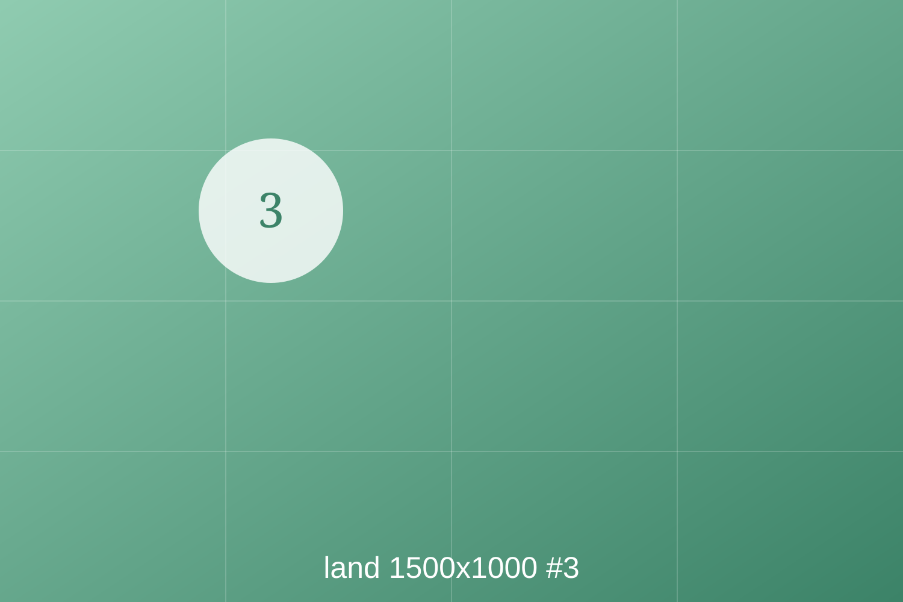
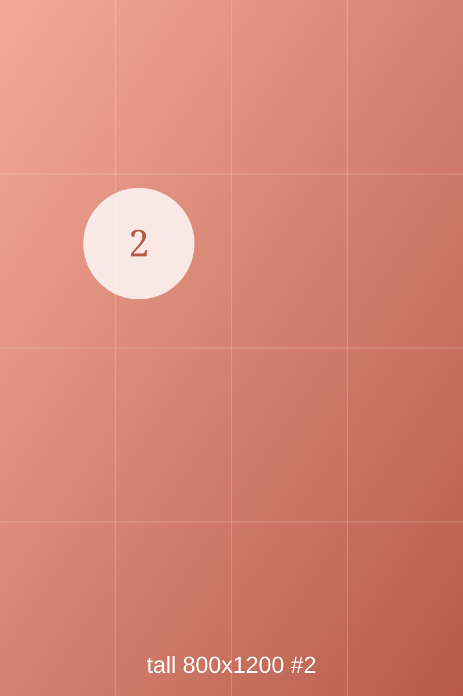
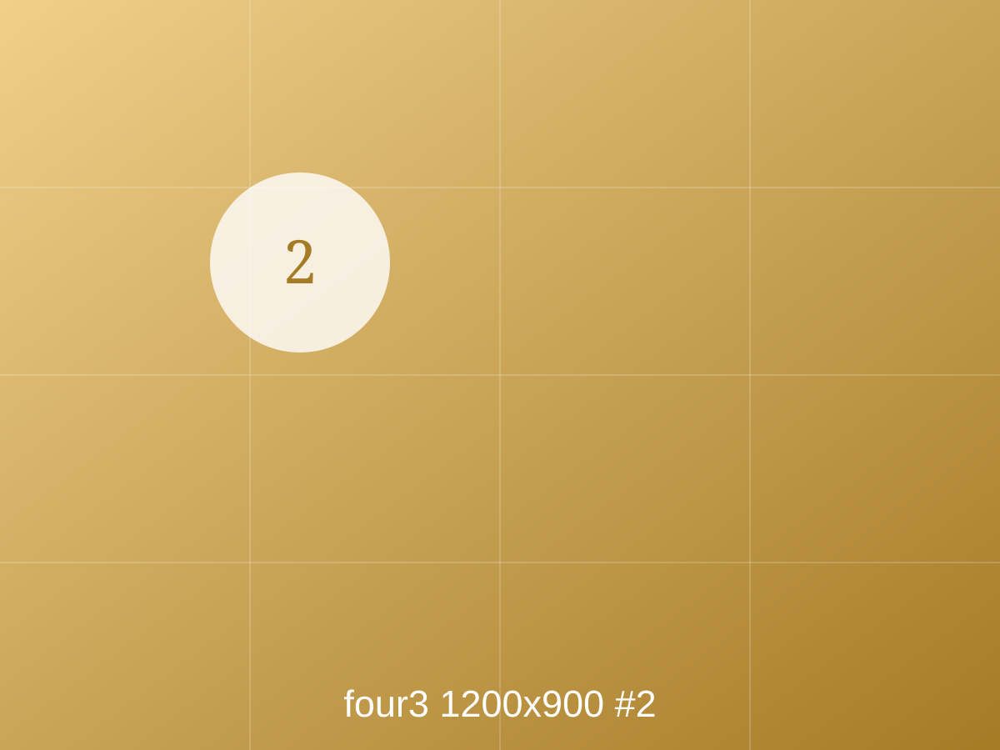

Estimate · agree with your partner first
How many seeds are in this packet?
¿Cuántas semillas hay en el paquete?

¿Cuántas semillas hay en el paquete?
¿Qué planta no va en nuestra torre?




All four photographs: Wikimedia Commons · CC BY-SA 4.0
Une cada palabra con su foto.


Photographs: Wikimedia Commons · CC BY-SA 4.0
¿Qué puede ser? Mira bien.